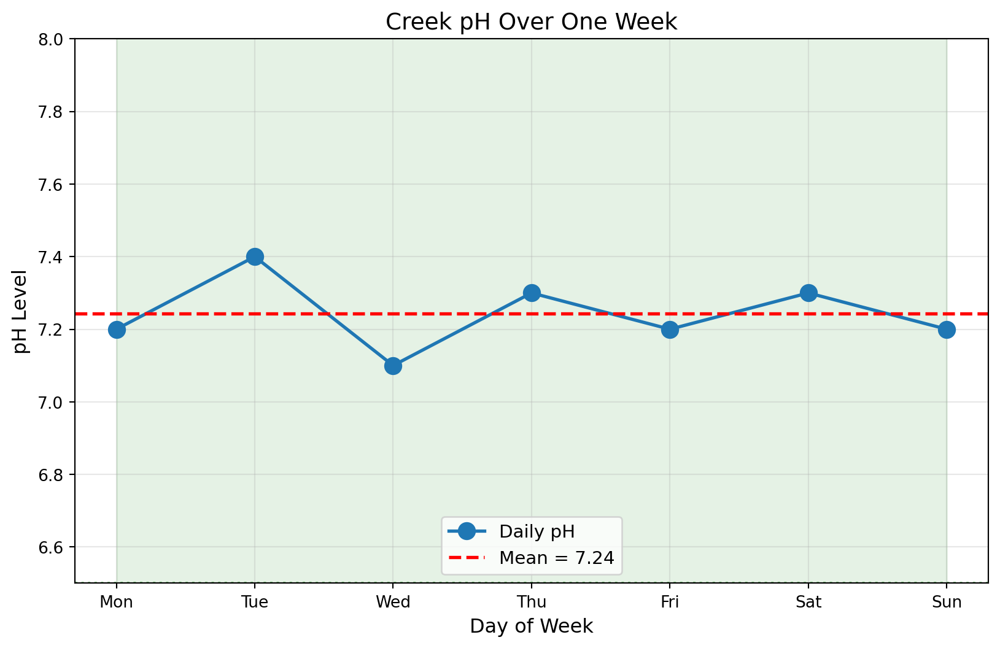
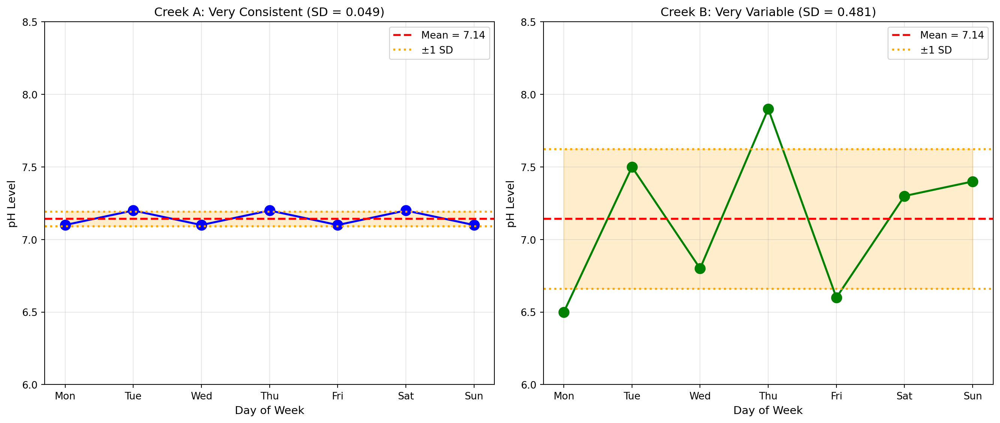

Example: If you got these test scores: 80, 85, 90, 95, 100
Your average = (80 + 85 + 90 + 95 + 100) ÷ 5 = 90
Scientists call the average the mean. Same thing, fancier name!
Why Do We Need the Mean for Water Quality?
Imagine a scientist is testing a creek and measures pH seven times:
7.2, 7.1, 7.3, 7.0, 7.2, 7.3, 7.1
Instead of listing all seven numbers, they can say: “The average pH is 7.17”
This is useful for: - 📊 Reporting to the community: “The creek’s pH is usually 7.2” - 🔍 Comparing different streams: “Creek A has pH 7.2, Creek B has pH 6.8” - 📅 Tracking changes: “Last month average was 7.5, now it’s 7.0 - something changed!”
Calculating Mean By Hand
Let’s calculate the mean pH from those seven readings:
# Example pH readings from a creekph_readings = [7.2, 7.1, 7.3, 7.0, 7.2, 7.3, 7.1]# Step 1: Add them all uptotal =7.2+7.1+7.3+7.0+7.2+7.3+7.1print("Step 1 - Add them up:", total)# Step 2: Count how many readingscount =7print("Step 2 - Count readings:", count)# Step 3: Divide total by countmean_ph = total / countprint("Step 3 - Divide:", mean_ph)print(f"\n✓ The mean pH is {mean_ph:.2f}")
Step 1 - Add them up: 50.2
Step 2 - Count readings: 7
Step 3 - Divide: 7.171428571428572
✓ The mean pH is 7.17
The Easy Way: Let Python Do It!
Python has built-in tools to calculate the mean. We’ll use something called NumPy (Numerical Python):
import numpy as np# Same pH readingsph_readings = [7.2, 7.1, 7.3, 7.0, 7.2, 7.3, 7.1]# Calculate mean the easy way!mean_ph = np.mean(ph_readings)print("pH readings:", ph_readings)print(f"Mean pH: {mean_ph:.2f}")print("\nThat was much easier! 😊")
pH readings: [7.2, 7.1, 7.3, 7.0, 7.2, 7.3, 7.1]
Mean pH: 7.17
That was much easier! 😊
Breaking it down: - import numpy as np = Load the NumPy tool (we only do this once) - np.mean() = NumPy’s function to calculate mean - .2f = Show 2 decimal places (7.17 instead of 7.17142857…)
Try It: Calculate Mean Nitrate
Visualizing the Mean
Let’s see what the mean looks like on a graph:
import matplotlib.pyplot as pltimport numpy as np# Example: pH readings from a creek over one weekdays = ['Mon', 'Tue', 'Wed', 'Thu', 'Fri', 'Sat', 'Sun']ph_readings = [7.2, 7.4, 7.1, 7.3, 7.2, 7.3, 7.2]# Calculate meanmean_ph = np.mean(ph_readings)# Create a graphplt.figure(figsize=(10, 6))plt.plot(days, ph_readings, marker='o', markersize=10, linewidth=2, label='Daily pH')plt.axhline(y=mean_ph, color='red', linestyle='--', linewidth=2, label=f'Mean = {mean_ph:.2f}')plt.xlabel('Day of Week', fontsize=12)plt.ylabel('pH Level', fontsize=12)plt.title('Creek pH Over One Week', fontsize=14)plt.legend(fontsize=11)plt.grid(True, alpha=0.3)plt.ylim(6.5, 8)# Add safe zoneplt.axhline(y=6.5, color='green', linestyle=':', alpha=0.5)plt.axhline(y=8.5, color='green', linestyle=':', alpha=0.5)plt.fill_between(range(len(days)), 6.5, 8.5, alpha=0.1, color='green', label='Safe zone')plt.show()print(f"The red dashed line shows the mean pH: {mean_ph:.2f}")print("Notice how the mean is in the 'middle' of all the points!")

The red dashed line shows the mean pH: 7.24
Notice how the mean is in the 'middle' of all the points!
Understanding Standard Deviation
The mean tells us the average, but it doesn’t tell us if the readings are consistent or all over the place.
Standard deviation (SD) tells us: How spread out are the numbers?
Think of it like this:
Creek A: pH readings are 7.1, 7.2, 7.1, 7.2, 7.1 (very consistent!) Creek B: pH readings are 6.5, 7.5, 6.8, 7.9, 6.6 (all over the place!)
Both might have similar means, but Creek A is more stable. Standard deviation measures this!
What Standard Deviation Tells Us
Small SD = Readings are close together (stable, consistent)
Large SD = Readings are spread out (variable, inconsistent)
Why it matters for water quality: - Stable readings = Good! Water conditions are consistent - Variable readings = Investigate! Could be pollution events, sensor problems, or natural changes
Calculating Standard Deviation
import numpy as np# Two example creeks with same mean but different consistencycreek_a = [7.1, 7.2, 7.1, 7.2, 7.1, 7.2, 7.1] # Stable creekcreek_b = [6.5, 7.5, 6.8, 7.9, 6.6, 7.3, 7.4] # Variable creekmean_a = np.mean(creek_a)std_a = np.std(creek_a)mean_b = np.mean(creek_b)std_b = np.std(creek_b)print("Creek A (Stable):")print(f" Mean pH: {mean_a:.2f}")print(f" Standard Deviation: {std_a:.3f}")print(f" Readings are usually within {mean_a - std_a:.2f} to {mean_a + std_a:.2f}")print("\nCreek B (Variable):")print(f" Mean pH: {mean_b:.2f}")print(f" Standard Deviation: {std_b:.3f}")print(f" Readings are usually within {mean_b - std_b:.2f} to {mean_b + std_b:.2f}")print(f"\nCreek B has {std_b/std_a:.1f} times more variability!")print("A scientist would want to investigate WHY Creek B is so variable.")
Creek A (Stable):
Mean pH: 7.14
Standard Deviation: 0.049
Readings are usually within 7.09 to 7.19
Creek B (Variable):
Mean pH: 7.14
Standard Deviation: 0.481
Readings are usually within 6.66 to 7.62
Creek B has 9.7 times more variability!
A scientist would want to investigate WHY Creek B is so variable.
Visualizing Standard Deviation
import matplotlib.pyplot as pltimport numpy as np# Same two example creekscreek_a = [7.1, 7.2, 7.1, 7.2, 7.1, 7.2, 7.1]creek_b = [6.5, 7.5, 6.8, 7.9, 6.6, 7.3, 7.4]mean_a = np.mean(creek_a)std_a = np.std(creek_a)mean_b = np.mean(creek_b)std_b = np.std(creek_b)# Create side-by-side graphsfig, (ax1, ax2) = plt.subplots(1, 2, figsize=(14, 6))days = ['Mon', 'Tue', 'Wed', 'Thu', 'Fri', 'Sat', 'Sun']# Creek A - Stableax1.plot(days, creek_a, marker='o', markersize=10, linewidth=2, color='blue')ax1.axhline(y=mean_a, color='red', linestyle='--', linewidth=2, label=f'Mean = {mean_a:.2f}')ax1.axhline(y=mean_a + std_a, color='orange', linestyle=':', linewidth=2, label='±1 SD')ax1.axhline(y=mean_a - std_a, color='orange', linestyle=':', linewidth=2)ax1.fill_between(range(len(days)), mean_a - std_a, mean_a + std_a, alpha=0.2, color='orange')ax1.set_xlabel('Day of Week', fontsize=11)ax1.set_ylabel('pH Level', fontsize=11)ax1.set_title(f'Creek A: Very Consistent (SD = {std_a:.3f})', fontsize=12)ax1.legend()ax1.grid(True, alpha=0.3)ax1.set_ylim(6, 8.5)# Creek B - Variableax2.plot(days, creek_b, marker='o', markersize=10, linewidth=2, color='green')ax2.axhline(y=mean_b, color='red', linestyle='--', linewidth=2, label=f'Mean = {mean_b:.2f}')ax2.axhline(y=mean_b + std_b, color='orange', linestyle=':', linewidth=2, label='±1 SD')ax2.axhline(y=mean_b - std_b, color='orange', linestyle=':', linewidth=2)ax2.fill_between(range(len(days)), mean_b - std_b, mean_b + std_b, alpha=0.2, color='orange')ax2.set_xlabel('Day of Week', fontsize=11)ax2.set_ylabel('pH Level', fontsize=11)ax2.set_title(f'Creek B: Very Variable (SD = {std_b:.3f})', fontsize=12)ax2.legend()ax2.grid(True, alpha=0.3)ax2.set_ylim(6, 8.5)plt.tight_layout()plt.show()print("The orange shaded area shows where most readings fall.")print("Creek A: narrow band = consistent")print("Creek B: wide band = variable")

The orange shaded area shows where most readings fall.
Creek A: narrow band = consistent
Creek B: wide band = variable
What Could Cause High Variability?
If a creek has high standard deviation (lots of variability), it might mean:
Pollution events - A factory dumps waste occasionally
Storm runoff - Rain washes fertilizer from farms into the creek
Natural cycles - Some creeks naturally vary (but usually not this much for pH)
Sensor problems - The equipment might need calibration
Different sampling times - Morning vs afternoon can be different
This is why buoys are so useful - they can measure continuously and help you see these patterns!
Try It: Analyze Two Rivers
Your Future: Real Data Collection
Right now, you’re practicing with example data that we created for learning. But soon you’ll:
🌊 Deploy sensor buoys in real streams and creeks
📊 Collect your OWN pH and nitrate data
🔬 Use these same Python skills to analyze YOUR measurements
📈 See real patterns in water quality over time
Instead of 7 measurements, you might have 700! That’s when mean and standard deviation become REALLY useful.
For now, let’s keep practicing with examples so you’ll be ready when it’s time for real data collection!
Quick Reference: Python Functions
Function
What It Does
Example
np.mean()
Calculates average
np.mean([7.1, 7.2, 7.3]) = 7.2
np.std()
Calculates standard deviation
np.std([7.1, 7.2, 7.3]) = 0.082
len()
Counts items
len([1, 2, 3]) = 3
sum()
Adds items
sum([1, 2, 3]) = 6
Key Takeaways
📊 Mean = Average value (add them up, divide by how many)
📏 Standard Deviation = How spread out the data is
✅ Small SD = Consistent, stable readings (usually good!)
⚠️ Large SD = Variable readings (investigate why!)
🔧 Python makes calculating these MUCH easier than by hand
🌊 Soon you’ll use real buoy data with hundreds of measurements!
Practice Challenge
Look at these example pH readings from a creek: [7.2, 7.1, 7.3, 7.2, 7.1]
Before running the code, try to guess: 1. Will the mean be closer to 7.0 or 7.5? 2. Will the standard deviation be big or small?
Then run the code to check:
Next up: We’ll learn about the median - another way to find the “middle” that’s sometimes better than the mean!